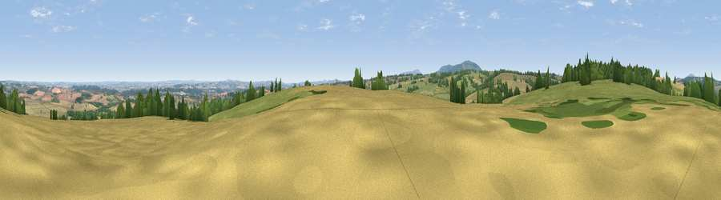

Viewpoint near Oldbury
#12065 in England · top 29% of its area beats it · near Oldbury · path 171 mWhere it is
The exact computed spot (SO 67125 92275). Click the marker for map links.
Public access: the nearest public right of way is about 171 m away — the final stretch may cross private land. Computed from Natural England's CRoW access layer and OpenStreetMap rights of way — not the legal definitive map. Always verify locally.
The view, rendered

A 360° render of this exact spot computed from the terrain model, tree cover and land cover — summer colours, afternoon light, calibrated against photographs of famous viewpoints. Real trees, hedges and buildings will differ in detail.
The panorama
Grey silhouette: terrain skyline in each direction (720 bearings, Earth curvature and refraction included). Dashed green: skyline with trees (+15 m) and buildings (+8 m) as obstacles. Blue strip: how far the ground is visible on each bearing.
Where the view opens
Wedge length = distance to the farthest visible ground on that bearing (vegetation-aware). Rings at 10, 25 and 50 km.
What fills the view
45% cropland · 35% grassland · 17% woodland · 2% built-up
Angular shares of the visible panorama (visual magnitude), not map area. Landscape diversity 0.48 (0–1 Shannon).
Key numbers
More beautiful places nearby
The staircase of upgrades: each row has a higher view potential than everything closer. Driving times are estimates from straight-line distance, calibrated against real road routing — check an actual route before setting out.
| Place | Direction | Drive | Score |
|---|---|---|---|
| Viewpoint near Monkhopton | NNW · 1 km | ~3 min | 61.8 |
| Apley Terrace | NE · 8 km | ~16 min | 65.1 |
| Viewpoint near Much Wenlock | NNW · 9 km | ~17 min | 69.2 |
| Viewpoint near Abdon | SW · 10 km | ~19 min | 82.6 |
| Viewpoint near Burwarton | SW · 10 km | ~20 min | 83.4 |
| Viewpoint near Little Wenlock | NNW · 16 km | ~29 min | 86.6 |
| North Hill | SSE · 47 km | ~68 min | 86.8 |
| Worcestershire Beacon | SSE · 48 km | ~69 min | 87.1 |
52.52735, -2.48601 · source: screening · position refined by local search. Computed location — check access rights before visiting.